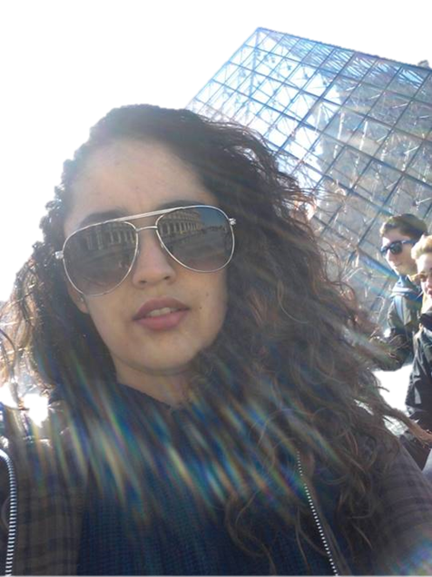

Bio
Mi nombre completo es Luisa Gabriela Trejo Rosales, nací en Tlalnepantla de Baz Estado de México en 1991, en una familia donde la igualdad de oportunidades
es primordial.
- Armar Rompecabezas
- 500 piezas o más
- Programar
- JavaScript
- C
- Cocinar
3 sueños que tengo
- Recorrer el mundo.
- Que todas la personas tengan acceso a la educación.
- Que la programación sea materia básica como matemáticas.